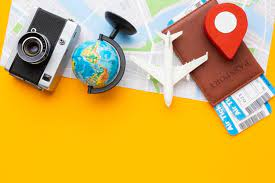

"La palabra Turismo según la OMT Organización Mundial del Turismo comprende
las actividades que realizan las personas durante sus viajes y estancias en lugares
distintos a su entorno habitual durante un periodo de tiempo inferior a un año, con fines de ocio,
negocios u otros.
Si no se realiza pernoctación, se consideran excursionistas. Los turistas y excursionistas forman
el total de visitantes.
El turismo puede ser doméstico (turistas dentro de su propio país) o internacional... Este último es hoy
una importante fuente de ingresos para muchos países. En el año 2015 hubo 1187 millones de desplazamientos
turísticos internacionales, siendo los países más visitados Francia (84 millones), Estados Unidos (77 millones),
España (68 millones), China (56 millones) e Italia (46 millones).
